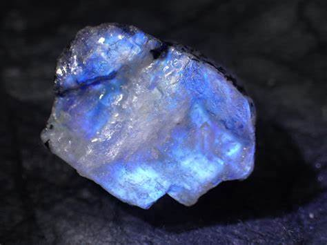

化学式
KAlSi3O8
ムーンストーンはカリウム、アルミニウム、シリコン、酸素から構成され、その美しいシラー効果はこれらの元素が独特な結晶構造を形成することによって生まれます。。
宝石言葉・石言葉
「直感」「感受性」「バランス」「新しい始まり」「希望」「癒し」
KAlSi3O8
ムーンストーンはカリウム、アルミニウム、シリコン、酸素から構成され、その美しいシラー効果はこれらの元素が独特な結晶構造を形成することによって生まれます。。
「直感」「感受性」「バランス」「新しい始まり」「希望」「癒し」
スリランカ、インド、オーストラリア等
ムーンストーンは、6月の誕生石として知られ、その神秘的な光沢が特徴です。この光沢は、月の光を思わせることから「ムーンストーン」と名付けられました。古代から、ムーンストーンは神秘的な力を持つ石として崇められ、多くの文化で愛されてきました。
ムーンストーンは、フェルドスパー鉱物の一種で、その美しいシラー効果（光の干渉による輝き）が特徴です。この効果により、ムーンストーンは見る角度によって異なる色合いと輝きを放ちます。一般的には青白い光沢を持つものが人気です。
ムーンストーンは、持ち主に直感力と感受性を高め、感情のバランスを保つ助けをすると信じられています。また、新しい始まりを象徴し、希望と癒しをもたらす石ともされています。
ムーンストーンは、新しい始まりを象徴する贈り物として最適です。また、直感力と感受性を高めたい人、感情のバランスを求める人におすすめです。この石を持つことで、心の平穏と新しい希望を感じることができるでしょう。